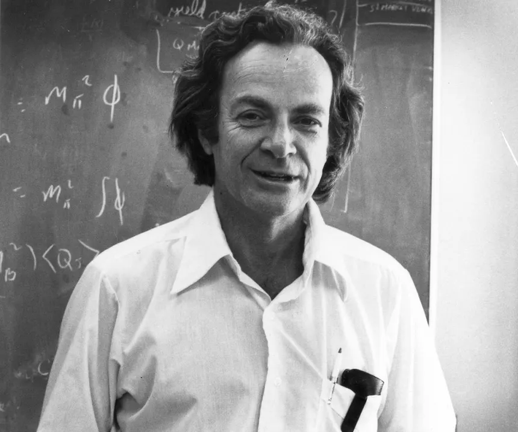

Richard Feynman: El Genio de la Curiosidad Infinita
Richard Feynman (Nueva York, 1918 – Los Ángeles, 1988) fue posiblemente el físico más carismático y heterodoxo del siglo XX. Conocido como "The Great Explainer" (El gran explicador), Feynman poseía una habilidad casi mágica para reducir las teorías más complejas a conceptos simples y visuales. Ganador del Premio Nobel de Física en 1965, su vida fue una mezcla de brillantez académica, pasión por los tambores bongo y una insaciable necesidad de descifrar cómo funciona el mundo.
Electrodinámica Cuántica y Diagramas de Feynman
Su mayor logro científico fue el desarrollo de la Electrodinámica Cuántica (QED), que describe cómo interactúan la luz y la materia. Para simplificar los cálculos matemáticos extremadamente densos, inventó los Diagramas de Feynman: una herramienta visual que permite representar las interacciones entre partículas subatómicas mediante líneas y nodos. Estos diagramas son hoy el lenguaje estándar en la física de partículas y fueron fundamentales para el trabajo que científicos como Santaolalla realizaron años después en el CERN.
Pionero de la Nanotecnología y la Computación
Feynman fue un visionario que se adelantó décadas a su tiempo. En su famosa conferencia de 1959, "Hay mucho sitio al fondo", sentó las bases de la nanotecnología, sugiriendo que algún día podríamos manipular átomos individualmente. Además, fue uno de los primeros en proponer la idea de la computación cuántica, argumentando que para simular la naturaleza (que es cuántica), necesitaríamos ordenadores que funcionaran bajo las mismas leyes de superposición y entrelazamiento.
Su participación en el Proyecto Manhattan y su posterior papel clave en la investigación del desastre del transbordador espacial Challenger demostraron su integridad científica. Feynman no aceptaba respuestas por autoridad; necesitaba experimentar y entender el "porqué" de las cosas desde su base más elemental, una filosofía que él llamaba "el placer de descubrir".
"Lo que no puedo crear, no lo entiendo. Aprende a resolver problemas por ti mismo y no te limites a aceptar los resultados de los demás."
La Técnica Feynman
Hoy, su legado vive no solo en la física, sino en la educación. Su método de estudio (explicar un tema como si se lo enseñaras a un niño para detectar tus propios vacíos de conocimiento) es utilizado por millones de estudiantes de ingeniería y programación en todo el mundo. Richard Feynman nos enseñó que la verdadera inteligencia no consiste en saber palabras complicadas, sino en ser capaz de explicar el universo con la sencillez de quien lo entiende de verdad.
Tendencias
- #RelatividadExtrema: ¿Es el tiempo una ilusión? El debate entre físicos y filósofos sobre la "inexistencia" del flujo temporal.
- #AgujerosDeGusano: Nuevos modelos cuánticos sugieren que podrían conectar el pasado con el futuro y resolver la paradoja de Hawking.
- #ComputaciónCuántica: El salto a la "tolerancia a fallos" y el uso de iones atrapados para simulaciones químicas complejas.
- #MateriaOscura: Detectores de grafeno logran captar interacciones de partículas fantasmales por primera vez en años.
- #MultiversoFísico: La huella fósil en los datos cosmológicos que podría demostrar la existencia de leyes físicas alternativas.
La física de vanguardia este año se centra en unir la gravedad con el colapso cuántico, desafiando nuestra percepción de la realidad cotidiana.